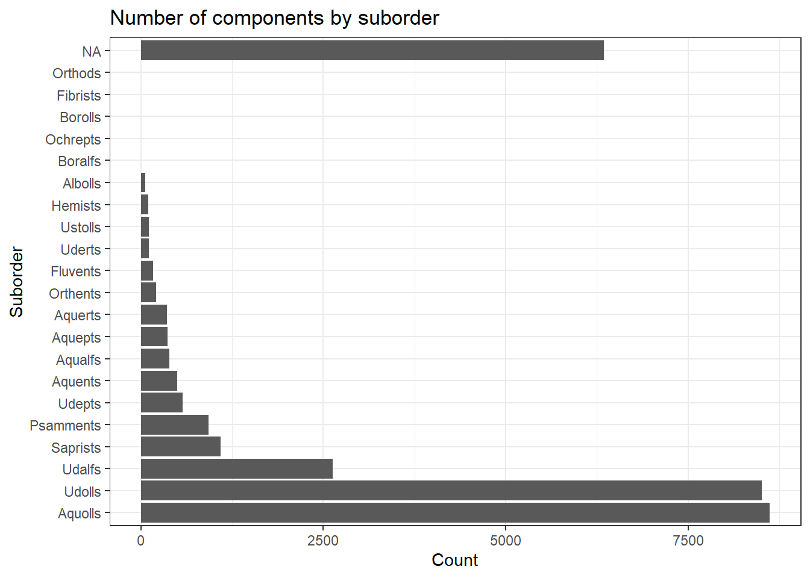

2 Explore Map Units & Components in AOI
2.1 Overview
I have a list of map unit keys from my clipped area of interest. In order to reduce the file size of the TIF I was working with, I created new map unit key IDs. The cross-walk table is in data/gSSURGO_MN/mukey_new_crosswalk.txt. There are 7,862 unique map unit keys in my area of interest (AOI).
This is what the cross-walk table looks like:
2.2 Map Units
I can use the map unit keys (MUKEYs) from my AOI to get more information on my target map units by calling up different tables from gSSURGO and subsetting based on the MUKEYs, and identifying the components within each mapunit in my AOI.
For more info about SSURGO tables and columns, refer to descriptions in the SSURGO metadata PDFs in data/gSSURGO_MN/
# which layers (tables) are available to me?
# can inspect layers in .gdb
sf::st_layers("./data/gSSURGO_MN/gSSURGO_MN.gdb")Driver: OpenFileGDB
Available layers:
layer_name geometry_type features fields
1 chaashto NA 223330 4
2 chconsistence NA 2794 10
3 chdesgnsuffix NA 62846 3
4 chfrags NA 321265 12
5 chorizon NA 130493 171
6 chpores NA 16 9
7 chstruct NA 110021 7
8 chstructgrp NA 95901 4
9 chtext NA 0 7
10 chtexture NA 318704 4
11 chtexturegrp NA 313739 6
12 chtexturemod NA 50000 3
13 chunified NA 240027 4
14 cocanopycover NA 50 6
15 cocropyld NA 34146 12
16 codiagfeatures NA 31760 12
17 coecoclass NA 52483 6
18 coeplants NA 25544 7
19 coerosionacc NA 5743 4
20 coforprod NA 2726 12
21 coforprodo NA 0 10
22 cogeomordesc NA 83667 8
23 cohydriccriteria NA 25091 3
24 cointerp NA 5698886 13
25 comonth NA 421728 17
26 component NA 42529 109
27 copm NA 49990 7
28 copmgrp NA 34883 4
29 copwindbreak NA 161238 8
30 corestrictions NA 4369 13
31 cosoilmoist NA 666791 9
32 cosoiltemp NA 96 9
33 cosurffrags NA 10955 15
34 cosurfmorphgc NA 17984 6
35 cosurfmorphhpp NA 28248 3
36 cosurfmorphmr NA 460 3
37 cosurfmorphss NA 42228 4
38 cotaxfmmin NA 33654 3
39 cotaxmoistcl NA 20332 3
40 cotext NA 42529 7
41 cotreestomng NA 32192 5
42 cotxfmother NA 31091 3
43 distinterpmd NA 11868 8
44 distlegendmd NA 92 11
45 distmd NA 92 4
46 featdesc NA 801 6
47 laoverlap NA 512 6
48 legend NA 92 14
49 legendtext NA 0 7
50 mapunit NA 10688 24
51 month NA 12 2
52 muaggatt NA 10688 40
53 muaoverlap NA 35224 4
54 mucropyld NA 23355 10
55 mutext NA 12230 7
56 sacatalog NA 92 11
57 sainterp NA 11868 9
58 sdvalgorithm NA 8 4
59 sdvattribute NA 211 53
60 sdvfolder NA 20 6
61 sdvfolderattribute NA 213 2
62 mdstatdomdet NA 6930 5
63 mdstatdommas NA 123 2
64 mdstatidxdet NA 172 4
65 mdstatidxmas NA 149 3
66 mdstatrshipdet NA 66 5
67 mdstatrshipmas NA 63 5
68 mdstattabcols NA 865 14
69 mdstattabs NA 75 5
70 FEATLINE Multi Line String 60902 5
71 FEATPOINT Point 254435 4
72 MULINE Multi Line String 0 5
73 MUPOINT Point 0 4
74 SAPOLYGON Multi Polygon 96 5
75 MUPOLYGON Multi Polygon 2123552 6
76 Valu1 NA 10688 58mn_gdb <- "data/gSSURGO_MN/gSSURGO_MN.gdb"
# read only mapunit table, as dataframe
mn_mapunits <- sf::st_read(dsn = mn_gdb, layer = "mapunit")Reading layer `mapunit' from data source
`C:\Users\Hava\Documents\R\ch03-sh-cluster\data\gSSURGO_MN\gSSURGO_MN.gdb'
using driver `OpenFileGDB'Warning: no simple feature geometries present: returning a data.frame or tbl_dfThese are the columns in the mapunit table:
colnames(mn_mapunits) [1] "musym" "muname" "mukind" "mustatus"
[5] "muacres" "mapunitlfw_l" "mapunitlfw_r" "mapunitlfw_h"
[9] "mapunitpfa_l" "mapunitpfa_r" "mapunitpfa_h" "farmlndcl"
[13] "muhelcl" "muwathelcl" "muwndhelcl" "interpfocus"
[17] "invesintens" "iacornsr" "nhiforsoigrp" "nhspiagr"
[21] "vtsepticsyscl" "mucertstat" "lkey" "mukey" We will subset to only include MUKEYs in our AOI.
# keep only the map units in my AOI (n=7862)
target_mapunits <- mn_mapunits %>%
filter(mukey %in% aoi_mu$MUKEY)
# summary of map unit types
target_mapunits %>%
dplyr::group_by(mukind) %>%
dplyr::summarise(n = n()) # when is mukind undefined?
target_mapunits %>%
filter(is.na(mukind))# what's going on with W = water?
water_mukeys <- target_mapunits %>%
filter(musym == "W") %>%
pull(mukey)
target_mapunits %>%
filter(mukey %in% water_mukeys) %>%
head()# saving CSV of target map unit info
write_csv(target_mapunits, "data/target_mapunit_table.csv") 2.3 Components
First a reminder of the columns in the component table:
mn_components <- sf::st_read(dsn = mn_gdb, layer = "component")Reading layer `component' from data source
`C:\Users\Hava\Documents\R\ch03-sh-cluster\data\gSSURGO_MN\gSSURGO_MN.gdb'
using driver `OpenFileGDB'Warning: no simple feature geometries present: returning a data.frame or tbl_dfcolnames(mn_components) [1] "comppct_l" "comppct_r" "comppct_h"
[4] "compname" "compkind" "majcompflag"
[7] "otherph" "localphase" "slope_l"
[10] "slope_r" "slope_h" "slopelenusle_l"
[13] "slopelenusle_r" "slopelenusle_h" "runoff"
[16] "tfact" "wei" "weg"
[19] "erocl" "earthcovkind1" "earthcovkind2"
[22] "hydricon" "hydricrating" "drainagecl"
[25] "elev_l" "elev_r" "elev_h"
[28] "aspectccwise" "aspectrep" "aspectcwise"
[31] "geomdesc" "albedodry_l" "albedodry_r"
[34] "albedodry_h" "airtempa_l" "airtempa_r"
[37] "airtempa_h" "map_l" "map_r"
[40] "map_h" "reannualprecip_l" "reannualprecip_r"
[43] "reannualprecip_h" "ffd_l" "ffd_r"
[46] "ffd_h" "nirrcapcl" "nirrcapscl"
[49] "nirrcapunit" "irrcapcl" "irrcapscl"
[52] "irrcapunit" "cropprodindex" "constreeshrubgrp"
[55] "wndbrksuitgrp" "rsprod_l" "rsprod_r"
[58] "rsprod_h" "foragesuitgrpid" "wlgrain"
[61] "wlgrass" "wlherbaceous" "wlshrub"
[64] "wlconiferous" "wlhardwood" "wlwetplant"
[67] "wlshallowwat" "wlrangeland" "wlopenland"
[70] "wlwoodland" "wlwetland" "soilslippot"
[73] "frostact" "initsub_l" "initsub_r"
[76] "initsub_h" "totalsub_l" "totalsub_r"
[79] "totalsub_h" "hydgrp" "corcon"
[82] "corsteel" "taxclname" "taxorder"
[85] "taxsuborder" "taxgrtgroup" "taxsubgrp"
[88] "taxpartsize" "taxpartsizemod" "taxceactcl"
[91] "taxreaction" "taxtempcl" "taxmoistscl"
[94] "taxtempregime" "soiltaxedition" "castorieindex"
[97] "flecolcomnum" "flhe" "flphe"
[100] "flsoilleachpot" "flsoirunoffpot" "fltemik2use"
[103] "fltriumph2use" "indraingrp" "innitrateleachi"
[106] "misoimgmtgrp" "vasoimgtgrp" "mukey"
[109] "cokey" Summarizing some info about number of components, major components
# keep the components in my target map units
target_comp <- mn_components %>%
filter(mukey %in% target_mapunits$mukey)
# looking at this, it's probabaly safe to exclude
# compname == "Water" when the comppct_r is also 100%
# there's one here where water is only 5%, "Riverwash", rest are 100%
water_comp <- target_comp %>% filter(mukey %in% water_mukeys)
# how many components?
nrow(target_comp)[1] 31065# how many major components? (defined by "majcompflag")
target_comp %>%
filter(majcompflag == "Yes") %>%
nrow() [1] 10588For our unique MUKEYs, how many components in each?
# how many components per mukey?
comp_nest <- target_comp %>%
dplyr::group_by(mukey) %>%
nest()
comp_nest_n <- comp_nest %>%
dplyr::mutate(n_comp = map_dbl(data, nrow))
comp_nest_n %>%
dplyr::group_by(n_comp) %>%
count(name = "n_mapunits")# just the major components from target MUs
maj_comp <- target_comp %>%
filter(majcompflag == "Yes")
nrow(maj_comp)[1] 105882.4 Taxonomy Summaries
2.4.1 Order
target_comp %>%
dplyr::group_by(taxorder) %>%
dplyr::summarise(n = n()) %>%
arrange(n)# what's up with taxonomic order = NA?
# not really farmable stuff.
maj_comp %>%
filter(is.na(taxorder)) %>%
pull(compname) %>%
unique() [1] "Water" "Pits" "Dumps"
[4] "Urban land" "Riverwash" "Highway"
[7] "Pits, gravel" "Rock outcrop" "Beaches"
[10] "Pits, limestone quarry" "Dune land" "Terrace escarpments"
[13] "Alluvial" 2.4.2 Suborder
suborders <- target_comp %>%
dplyr::group_by(taxsuborder) %>%
dplyr::summarise(n = n())
suborders %>%
ggplot() +
geom_col(aes(y = reorder(taxsuborder, -n), x = n)) +
ylab("Suborder") +
xlab("Count") +
theme_bw() +
ggtitle("Number of components by suborder")
# what's up with taxonomic suborder = NA?
# much of this likely dropped if we use CDL to subset
comps_no_taxsuborder <- target_comp %>%
filter(is.na(taxsuborder)) %>%
pull(compname) %>%
unique()
length(comps_no_taxsuborder)[1] 829head(comps_no_taxsuborder, n = 20) [1] "Water"
[2] "Pits"
[3] "Dumps"
[4] "Cormant"
[5] "Urban land"
[6] "Mavie"
[7] "Kratka"
[8] "Radium"
[9] "Sahkahtay"
[10] "Deerwood"
[11] "Flaming"
[12] "Northwood"
[13] "Rosewood"
[14] "Roliss"
[15] "Hamre"
[16] "Percy"
[17] "Berner"
[18] "Soils that have a mineral surface layer"
[19] "Strathcona"
[20] "Huot" tail(comps_no_taxsuborder, n = 20) [1] "Sawmill"
[2] "Marshan"
[3] "Tripoli"
[4] "Poorly drained sandy alluvial soils"
[5] "Poorly and very poorly drained soils"
[6] "Newalbin"
[7] "Clrippin"
[8] "Collinwood"
[9] "Lakefield"
[10] "Ocheyedan"
[11] "Fostoria"
[12] "Crippen"
[13] "Farrer"
[14] "Ocheydan"
[15] "Grogan"
[16] "Farrar"
[17] "PD sandy soils"
[18] "Moundprairie"
[19] "PD soils"
[20] "Walford Variant" 2.4.3 Subgroup & Family (long name)
The taxclname is a concatenation of the taxonomy subgroup and family. On 11 August, 2022 Nic and I talked about how this could be another way to pull out mineralogy information. Could grab “smectitic” or “mixed” from these names if we wanted to do yes/no variable.
target_comp %>%
pull(taxclname) %>%
unique() %>%
head()[1] "Sandy over clayey, mixed over smectitic, frigid Typic Calciaquolls"
[2] "Sandy over clayey, mixed over smectitic, frigid Aquic Calciudolls"
[3] "Mixed, frigid Aquic Udipsamments"
[4] "Fine, smectitic, frigid Typic Epiaquerts"
[5] "Sandy, mixed, frigid Typic Endoaquolls"
[6] "Sandy, mixed, frigid Aeric Calciaquolls" 2.5 Variables of Interest
I think my next step is to use the chorizon table and pull the variables I’m interested in for each of my major components. Devine et al. 2021 did 0-30cm depth-weighted averages. I am going to do 0-20cm because I believe this is more likely to be the available depth in our validation datasets (esp. CIG).
Then I can turn my horizon table into an SPC object, with cokey as “site”?
chorizon <- mn_components <- sf::st_read(dsn = mn_gdb, layer = "chorizon")Reading layer `chorizon' from data source
`C:\Users\Hava\Documents\R\ch03-sh-cluster\data\gSSURGO_MN\gSSURGO_MN.gdb'
using driver `OpenFileGDB'Warning: no simple feature geometries present: returning a data.frame or tbl_dftarget_horiz <- chorizon %>%
filter(cokey %in% maj_comp$cokey)2.6 Diagnostic Features
Here, I’m pulling out the depth to restrictive horizon (if any) in the profile. Note that this may be >20cm, for our other features we are summarizing soil properties in the 0-20cm depth range.
# read only diag features table, as dataframe
diag <- sf::st_read(dsn = mn_gdb, layer = "codiagfeatures")Reading layer `codiagfeatures' from data source
`C:\Users\Hava\Documents\R\ch03-sh-cluster\data\gSSURGO_MN\gSSURGO_MN.gdb'
using driver `OpenFileGDB'Warning: no simple feature geometries present: returning a data.frame or tbl_df# check out what kind of diagnostic features we have
unique(diag$featkind) %>% head(20) [1] "Histic epipedon"
[2] "Ochric epipedon"
[3] "Albic materials"
[4] "Albic horizon"
[5] "Argillic horizon"
[6] "Aquic conditions"
[7] "Lamellae"
[8] "Sapric soil materials"
[9] "Hemic soil materials"
[10] "Fibric soil materials"
[11] "Cambic horizon"
[12] "Mollic epipedon"
[13] "Calcic horizon"
[14] "Abrupt textural change"
[15] "Slickensides"
[16] "Strongly contrasting particle size class"
[17] "Lithologic discontinuity"
[18] NA
[19] "Lithic contact"
[20] "Spodic horizon" target_diag <- diag %>%
filter(cokey %in% maj_comp$cokey)Ok, so from above we can see that 10458 cokeys out of a total of 10588 have something entered in the featkind field as a diagnostic feature. Now let’s investigate how many of those might be considered restrictive to roots (relevant in agricultural context):
target_restr
target_restr <- target_diag %>%
filter(featkind %in% c("Lithic contact",
"Densic contact",
"Paralithic contact"))
# how many cokeys have a restrictive horizon?
length(unique(target_restr$cokey))[1] 69target_restr# save this in case we want to investigate further
#it's such a small number, seems unlikely
write_csv(target_restr, "./data/restr_horiz_data_cokey.csv")